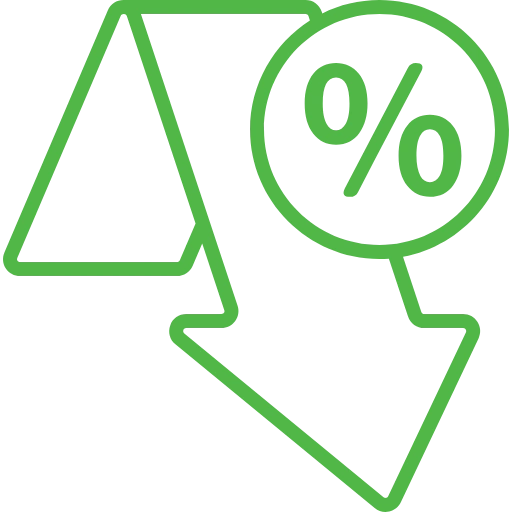
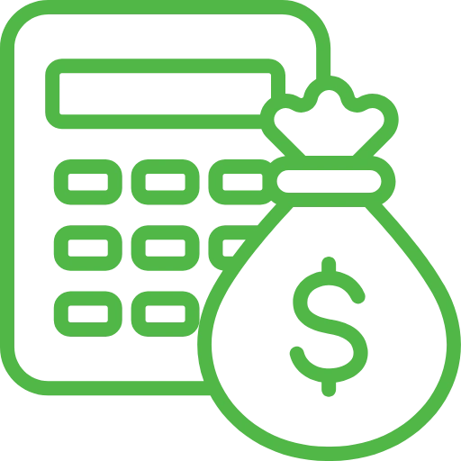

Trading calculators are essential for improving forex traders' analytical skills and boosting their overall trading success, whether they are used for calculating margins, evaluating risk-reward ratios, or deciding position sizes.
Economic Calendar
An Economic Calendar tracks key financial events like interest rates, GDP, and employment data, helping traders anticipate market movements.
Pip Calculator

The Pip Monitor Tool tracks market expectations for Federal Reserve interest rate changes, helping traders anticipate monetary policy shifts.
Currency Convertor
A Currency Converter calculates exchange rates between currencies, assisting traders and travelers with real-time currency conversions.
Fibonacci Calculator
A Fibonacci Calculator computes key retracement and extension levels, aiding traders in identifying potential support and resistance areas.
Currency Correlation
Currency Correlation measures the relationship between currency pairs, helping traders assess diversification and manage risk effectively.
Pivot Point Calculator
A Pivot Point Calculator determines key support and resistance levels, helping traders identify potential market turning points.
Margin Calculator
A Margin Calculator helps traders determine the margin required to open and maintain a trading position.
Profit Calculator

A Profit Calculator estimates potential profits or losses from trades, helping traders plan and evaluate strategies.
Currency Heat Map
A Currency Heat Map visually represents the strength of various currencies, helping traders quickly identify market trends and opportunities.